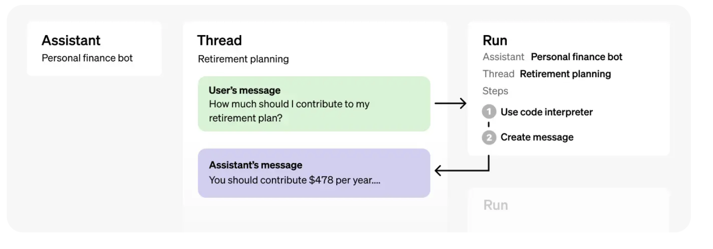

import openai
from openai import OpenAI
import os
from dotenv import load_dotenv, find_dotenv
_ = load_dotenv(find_dotenv())
openai.api_key = os.getenv('OPENAI_API_KEY')Create an Assistant
Assistants API makes it easier to build assistive AI apps that have goals and can call models and tools
What is an Assistant?
- Can be configured to respond to users’ messages using several parameters like:
- Instructions: how the Assistant and model should behave or respond
- Tools: the API supports Code Interpreter and Retrieval that are built and hosted by OpenAI.
- Functions: the API allows you to define custom function signatures
Objects

What objects represent
Thread: A conversation session between an Assistant and a user. Threads store Messages.
Message: A message created by an Assistant or a user. Messages can include text, images, and other files. Messages stored as a list on the Thread.
Run: An invocation of an Assistant on a Thread. The Assistant uses it’s configuration and the Thread’s Messages to perform tasks by calling models and tools. As part of a Run, the Assistant appends Messages to the Thread.
Run Step: A detailed list of steps the Assistant took as part of a Run. An Assistant can call tools or create Messages during it’s run. Examining Run Steps allows you to introspect how the Assistant is getting to it’s final results.
Demo
Setup
Step 0: Start session
First, we create a session of a client
client = OpenAI()Step 1: Create an Assistant
assistant = client.beta.assistants.create(
name="Math Tutor",
instructions="You are a personal Math tutor. Write and run code to answer math questions.",
tools=[{"type": "code_interpreter"}],
model="gpt-4-1106-preview"
)Step 2: Create a Thread
A Thread represents a conversation.
Pass any user-specific context and files in this thread by creating Messages.
thread = client.beta.threads.create()Step 3: Add a Message to a Thread
Create message
- A Message contains the user’s text, and optionally, any files that the user uploads (no images).
message = client.beta.threads.messages.create(
thread_id=thread.id,
role="user",
content="I need to solve the equation `3x + 11 = 14`. Can you help me?"
)Inspect message
messageThreadMessage(id='msg_9x1SPRtQLbWqXMVNIXkBZ0tF', assistant_id=None, content=[MessageContentText(text=Text(annotations=[], value='I need to solve the equation `3x + 11 = 14`. Can you help me?'), type='text')], created_at=1699425718, file_ids=[], metadata={}, object='thread.message', role='user', run_id=None, thread_id='thread_5uZgyTMf0t7Im9TPxvAVDmUD')Display user message
- Show the content of the message
message_content = message.content[0].text
message_content.value- ‘I need to solve the equation
3x + 11 = 14. Can you help me?’
Step 4: Run the Assistant
For the Assistant to respond to the user message, you need to create a Run.
This makes the Assistant read the Thread and decide whether to call tools or simply use the model to best answer the user query.
As the run progresses, the assistant appends Messages to the thread with the
role="assistant".You can optionally pass additional instructions to the Assistant while creating the Run
Create Run
run = client.beta.threads.runs.create(
thread_id=thread.id,
assistant_id=assistant.id,
instructions="Please address the user as Jane Doe. The user has a premium account."
)Step 5: Display the Assistant’s Response
This creates a Run in a queued status.
You can periodically retrieve the Run to check on its status to see if it has moved to completed.
Retrieve Run
run = client.beta.threads.runs.retrieve(
thread_id=thread.id,
run_id=run.id
)print(run)Run(id='run_EF9AwlwFnOQJ3wPRCIdNGVaS', assistant_id='asst_YhNjYRQT38e4I5N8WsZ7ihz1', cancelled_at=None, completed_at=None, created_at=1699425952, expires_at=1699426552, failed_at=None, file_ids=[], instructions='Please address the user as Jane Doe. The user has a premium account.', last_error=None, metadata={}, model='gpt-4-1106-preview', object='thread.run', required_action=None, started_at=None, status='queued', thread_id='thread_5uZgyTMf0t7Im9TPxvAVDmUD', tools=[ToolAssistantToolsCode(type='code_interpreter')])Retrieve Messages
Once the Run completes, you can retrieve the Messages added by the Assistant to the Thread.
messages_cursor = client.beta.threads.messages.list(
thread_id=thread.id
)messages_cursorSyncCursorPage[ThreadMessage](data=[ThreadMessage(id='msg_aFjIRT2SoI0i3zcAVlFsx3Yn', assistant_id='asst_YhNjYRQT38e4I5N8WsZ7ihz1', content=[MessageContentText(text=Text(annotations=[], value='The solution to the equation \\(3x + 11 = 14\\) is \\(x = 1\\).'), type='text')], created_at=1699425958, file_ids=[], metadata={}, object='thread.message', role='assistant', run_id='run_EF9AwlwFnOQJ3wPRCIdNGVaS', thread_id='thread_5uZgyTMf0t7Im9TPxvAVDmUD'), ThreadMessage(id='msg_9x1SPRtQLbWqXMVNIXkBZ0tF', assistant_id=None, content=[MessageContentText(text=Text(annotations=[], value='I need to solve the equation `3x + 11 = 14`. Can you help me?'), type='text')], created_at=1699425718, file_ids=[], metadata={}, object='thread.message', role='user', run_id=None, thread_id='thread_5uZgyTMf0t7Im9TPxvAVDmUD')], object='list', first_id='msg_aFjIRT2SoI0i3zcAVlFsx3Yn', last_id='msg_9x1SPRtQLbWqXMVNIXkBZ0tF', has_more=False)Only display response of assistant
# Iterate over the cursor to get all messages
messages = [message for message in messages_cursor]
# The assistant's response should be the first message in the thread
assistant_response = messages[0].content if messages else "No response yet."
print(assistant_response)
- [MessageContentText(text=Text(annotations=[], value='Certainly, Jane Doe. The solution to the equation \\(3x + 11 = 14\\) is \\(x = 1\\).'), type='text')]Extract only text response
assistant_response[0].text.value